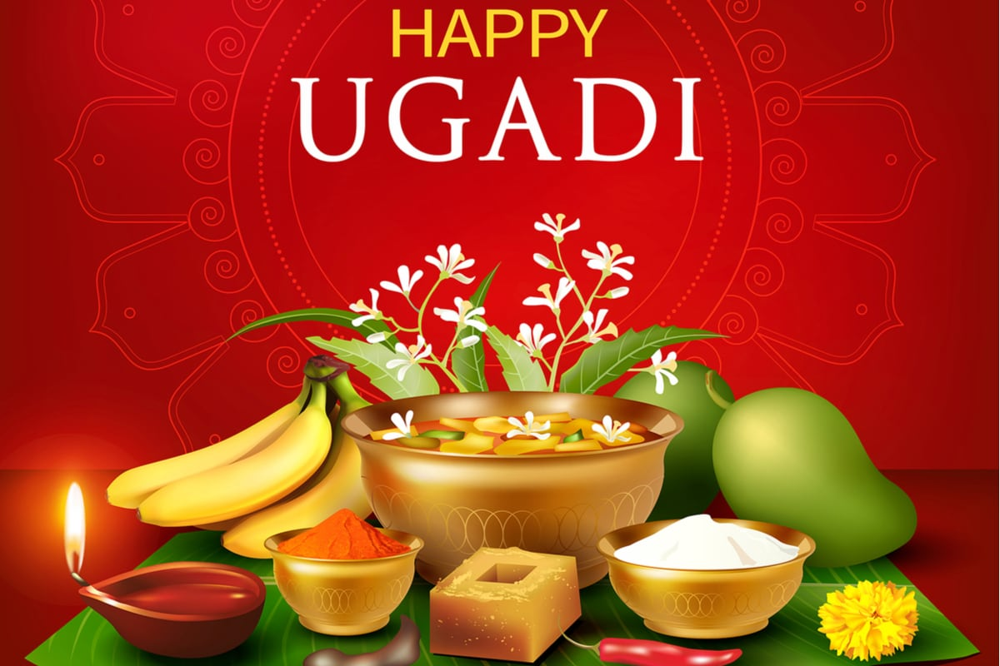
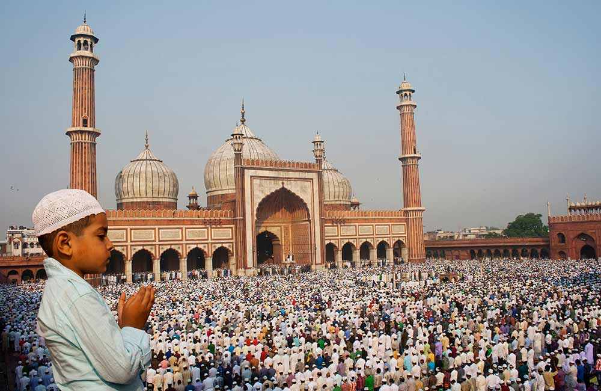
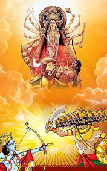
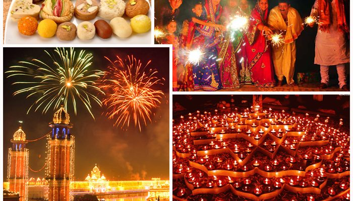
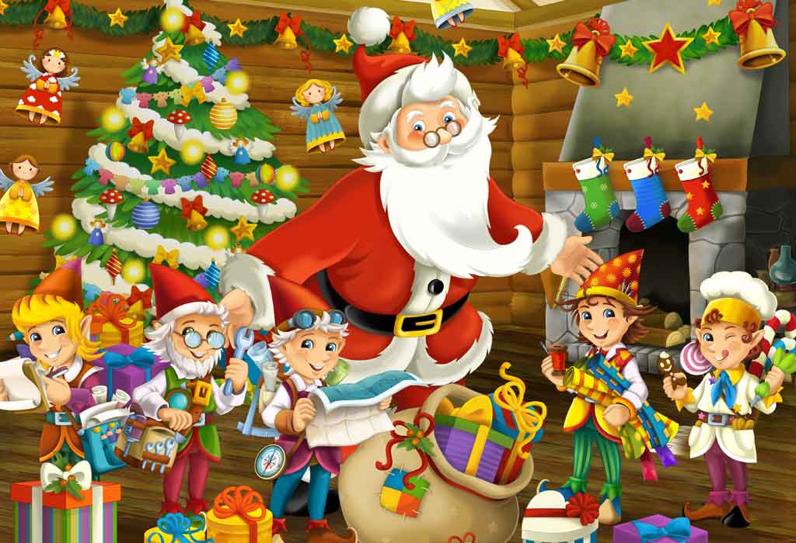

MAKARA SANKRANTI
Makar Sankranti is a famous Hindu festival celebrated on 14th January every year. The festival marks the sun's transition into Capricorn or 'Makar Rashi' of the zodiac. It is considered the most auspicious occasion of the season and observed with holy baths in rivers and thanksgiving prayers to Sun God.

UGADI
Ugadi is a Hindu festival, celebrated in the south Indian states of Andhra Pradesh, Karnataka and Telangana. The festival marks the beginning of a new Hindu calendar year and is celebrated on the first day of “Chaitra” month, which falls in the months of March-April as per the Gregorian calendar.
EID-UL-FITR
Eid al-Fitr marks the end of Ramadan, the Muslim holy month of fasting, and is celebrated during the first three days of Shawwāl, the 10th month of the Islamic calendar
GANESH CHATURTHI
Ganesh Chaturthi is a major Hindu festival celebrated all over India. It is believed that Lord Ganesh was born Ganesh Chaturthi. Vinayak Chaturthi is celebrated on Shukla Chaturthi of Bhandara month according to The Hindu calendar. The festival of Ganesh Chaturthi is celebrated for about ten to eleven days.

DUSSEHRA
Dussehra festival is celebrated to remember Lord Rama's triumph over Ravan. It also commemorates Goddess Durga's triumph over Mahishasur in defending the world from him. On the day of the festival, people burn effigies of Ravana.
DIWALI
Diwali is often called the 'Festival of Lights', and is celebrated by lighting lamps, and bursting crackers and fireworks. It is a festival which commemorates the victorious return of Lord Rama to Ayodhya after saving his wife Sita from the demon king Ravana.
CHRISTMAS
Christmas is celebrated every year on December 25. The festival marks the celebration of the birth anniversary of Jesus Christ. Jesus Christ is worshipped as the Messiah of God in Christian Mythology.
